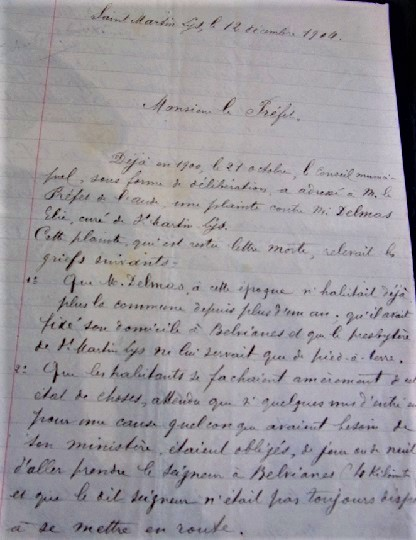

Cet épisode dont j'ai trouvé les courriers aux archives départementales de l'Aude, me semble parfaitement représentatif des disputes qui ont pu précéder la loi de séparation de l'Eglise et de l'Etat du 9 décembre 1905.
Avant cette loi, les curés recevaient leurs revenus de l'Etat s'ils résidaient dans la commune de leur cure.
Le maire de la commune devait donc confirmer la résidence effective du curé pour qu'il puisse être payé.
En 1900 le curé de Saint Martin était l'abbé Elie Delmas. Il s'était déjà plaint de l'état du presbytère que la mairie ne pouvait (ou ne voulait ?) pas entretenir. Aussi même avant cet épisode les relations entre le maire, Zéphirin Dumont, et son curé étaient déplorables, des procès avaient même eu lieu.
L'abbé Delmas avait une soeur à Belvianes, aussi il semble qu'il préférait, dans ces conditions, être plus souvent près d'elle qu'à Saint Martin.
Dès 1901, Zéphirin Dumont a dénoncé au Préfet de l'Aude les absences répétés de l'abbé Delmas, et a même refusé de signer le certificat de présence du curé à St Martin : c'est le conseil municipal qui a dû faire la déclaration sans la signature du maire.
Cette dispute a duré jusqu'en janvier 1905 avant que l'évêché décide de forcer l'abbé Delmas à revenir habiter le presbitaire de Saint Martin Lys.
Ci-dessous, je reproduis trois des courriers échangés avec la préfecture ou l'évêché, la première dénonciation effectuée par le maire, la réponse de l'abbé, la réponse du maire à ce dernier courrier, ainsi qu'un des certificats de résidence que le maire a refusé de signer.
Courrier de Zéphirin Dumont au Préfet de l'Aude de juin 1901
Certificat de résidence des membres du clergé du 2 juin 1901
Courrier de Elie Delmas au Vicaire général de l'évêché de Carcassonne le 23 mai 1903
Courrier de Zéphirin Dumont au Préfet de l'Aude du 12 décembre 1904